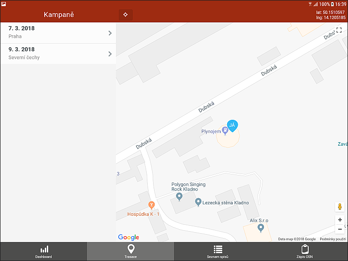
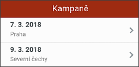
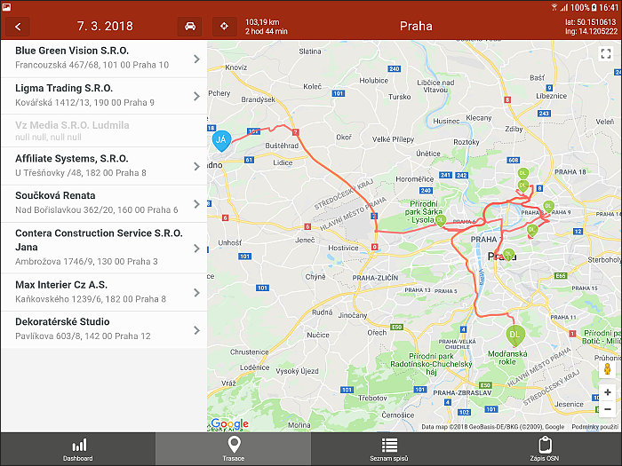

Trasace
Trasace slouží k rychlému přehledu stažených dvou nejbližších kampaní. V levé části obrazovky jsou vypsány obě vybrané kampaně, v pravé části je mapa, která v první fázi nabízí momentální polohu tabletu.


Kliknutím na libovolnou z obou kampaní se tato rozbalí a uživateli se zobrazí seznam jednotlivých bodů kampaně (Název dlužníka a jeho adresa k OSN) a rozšířené menu.
